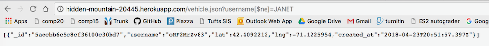
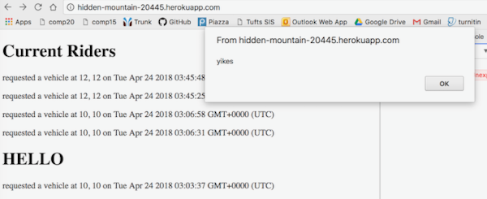
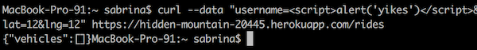
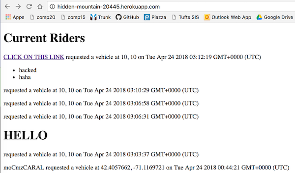
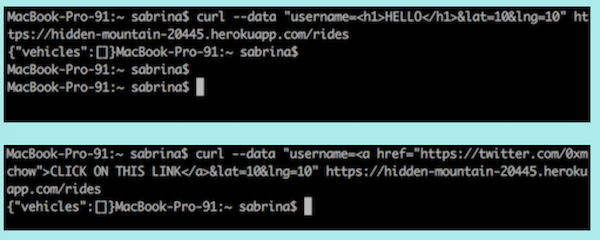

The product I am testing is a ride sharing service. A client sends their username, along with their current latitidue and longitude to a server. If the client is a passenger, the server returns data for all the vehicles that have recently checked in, and if the client is a vehicle, the server returns data for all the passengers that have recently checked in. My job was to find vulnerabilites in the client side and server side implementations of this service. Specifically, I looked for places where user information could be exposed and strange things could be sent and displayed on various pages of the service.
I tested for flaws in my partner's program by sending data through curl and attempting a database injection before I read their code. After seeing that these attacks were successful, I looked through their server code and found that they did not attempt to prevent against these attacks. I proceeded to look through their clientside code for bad programming practices/potential issues. Unfortunately, my browser was doing the weird thing where it was not updating its sources when I tried to serve my partner's code locally, therefore I could not see the actual interface. However, since I knew how client side framework works (to some extent) I understood that the client side HTML and javascript would be visible to the client.
The first security flaw that I found allowed someone knowing only one vehicle username to see a different vehicle's username. This was done by using an operator that means not equal. Normally, a website will query the user for something that the field is equal to (field=______). However, by using field[$ne]=______, the server returned information for a different user. This is bad because it allows users to see potentially unauthorized data. Additionally, the way the server was set up, the request to send back users that were not equal to a username sent other data with it, like latitude, longitude, and when that user was at that location - which is especially bad!
The second issue I found was a way to "inject" code into a website. That means that I sent data to the server using script tags (<script></script>), and when a website was visited that parsed through server data, the website executed the code I sent. This is particularly bad because if simple code can be sent and executed, then malicious code can be too. This malicious code could range anywhere from installing an annoying bug on your computer to tracking your location to redirecting you to a bad website.
The third issue I found was the direct inclusion of a user's username on a client side HTML file. Client side means that anyone can access it. For example, using developer tools on a browser, HTML and JS files can be seen for many websites. Because the client is never to be trusted, the information contained on client side files must be paid close attention to. Sensitive information is never to be put on client side files. The inclusion of the username in a client side HTML file is bad because HTTP requests (when you hit enter after having typed in a website name to your browser) can be intercepted, and the information in the client side fiels can be altered.
1. Query selector injection
Sending username[$ne]=JANET as the query to GET /vehicle.json results in another vehicle's information being displayed. This is a very severe issue because it allows people to view information that they are not supposed to view. If this were a real ride sharing service, this could allow people to see someone's location, and how recently they were there. This can be fixed by rejecting any requests starting with $ using something called mongo-sanitize. Another solution would be to cast values to strings before running the query.

2. JS/HTML injection
I sent javascript with script tags and HTML through curl and GET / executed the javascript code that I sent and displayed the HTML as I injected it. This is also a pretty severe issue. The code that I sent was not malicious, just annoying. But if I can execute simple code with a script tag, then more damaging JS code could be sent. As for the HTML, if anyone is able to inject HTML through sending data to a server, then bad stuff could get put up on a page. For example, I sent a link. Although the link I sent looks pretty sketchy, someone with more time and evil in their heart could send a nice looking link that downloads malware or something. It would also just mess with a website's look which is not good if it is a business or something. A way to fix this would be to sanitize inputs.
 
 
3. Insecure direct object reference
In my partner's code, they include the line var myUsername = "oRF2MrZv83"; which is bad programming practice. This is because everything on the client side can be intercepted (the client is never to be trusted). A client could put a different username in the code, thus causing another user's location to be improperly updated. If this were an actual ridesharing service, and a username was falsely updated or inserted, another user of the opposite type (user or passenger) could be led to a bad location. Therefore, this is another pretty severe issue. A way to prevent this issue is to have the user input their own username and have additional authorization check(s) like password.
It is clearly very important to take proper precautions to prevent your website and its users' information from being compromised. The most important takeaways from the security flaws that I found were to sanitize input and never trust the client (be careful with the data included in client side software). Future considerations include being very careful about how passwords are stored and validated (they should never be directly stored in a database - rather, they should be hashed or something along the lines of that). Validation is very important to security, so an actual ridesharing service would certainly need at least one source of authentication before data was sent to the server to confirm that the person sending the data is using the correct username.